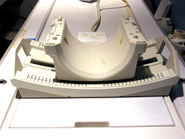
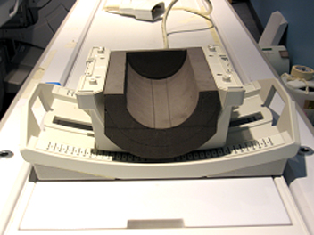
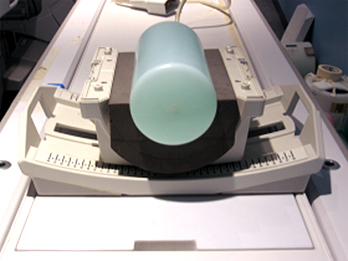

Operating Documentation
Direction 5670006, Rev# 1
Discovery MR750w GEM Service Methods
Module Version 13.0, Version Date 9/27/11
Operating Documentation |
| Required Persons | Preliminary Reqs | Procedure | Finalization |
|---|---|---|---|
| 1 | Not Applicable | 15 mins | Not Applicable |
Follow this process to prepare for the SNR test using the Invivo 3.0T HDT/R Quad Extremity Coil M7000GT, flat base.
| Item | Qty | Effectivity | Part# | Manufacturer | |
|---|---|---|---|---|---|
| T/R Quad Extremity Coil Phantom Positioner | 1 | - | 5147225-7 | - | |
| 3.0T Large Cylindrical Unified Phantom | 1 | Unified Phantom Set | 5342679-2 | - | |
| Condition | Reference | Effectivity |
|---|---|---|
The following coil configuration name must be installed to run this tool: QUADKNEE | - | - |
The GE HD T/R Quad Extremity Coil has one coil name: HD T/R Knee/Foot Coil by Invivo, and can be used in the QUADKNEE mode. The image quality check uses two different protocols for signal and noise image acquisition:
Signal scan is an FSE sequence used to minimize susceptibility and B0 inhomogeneity effects. The signal scan must be run prior to the noise scan since the R1, R2, and TG values from the signal scan are used for the noise scan.
Noise scan is a GRE sequence that has a Control Variable (do_noise) to eliminate the Transmit RF completely during the scan.
The Data Sheet in the Finalization section at the end of this procedure explains the data required to calculate the individual element Signal-to-Noise Ration (SNR).
Place the baseplate of the coil on the patient table as shown.
Illustration 1: Baseplate of Coil on Patient Table

Align the alignment mark on the coil to the zero position on the scale as shown.
Illustration 2: Alignment Mark at Zero Position

Place the Phantom Positioner into the coil as shown.
Illustration 3: Phantom Positioner Placement

| ||||
| Illustrations in this section show a phantom with green solution for 1.5T systems. Use phantoms with pink solution for 3.0T systems. | ||||
Place the large Cylindrical Unified Phantom in the phantom positioner.
Illustration 4: Phantom Placed in Positioner

Attach the anterior portion of the coil to the baseplate, and lock the coil.
Illustration 5: Anterior Portion of Coil Attached to Baseplate

Illustration 6: Coil Lock

From the Scan Desktop, start a new scan by selecting New Pt. For Patient ID, use geservice and 111 pounds for Patient Weight. Select [Patient Position] to open Protocols window.
At the magnet, press the [Alignment Light] button to turn on the light.
Move the table to align the coil to the alignment lights as shown using the alignment markings on the coil in front of the chimney.
Press the [Landmark] button to landmark the alignment.
Illustration 7: Coil Alignment

Move the coil to the scan position by pressing the [Move to Scan] button, ensuring the cable does not get snagged.
At the console, set the protocols per the Signal section from the table below.
Table 1: Signal and Noise Protocols
| Protocol | Signal | Noise |
| Patient Exam Information: | ||
| Patient ID | geservice | geservice |
| Patient Name | ||
| Patient Weight | 111 lb. (50 kg) | 111 lb. (50 kg) |
| Patient Position: | ||
| Patient Position | Supine | Supine |
| Patient Entry | Feet First | Feet First |
| Coil | QUADKNEE | QUADKNEE |
| Series Description | Signal | Noise |
| Imaging Parameters: | ||
| Plane | Axial | Axial |
| Mode | 2D | 2D |
| Pulse Seq | FSE-XL | GRE |
| Imaging Options | Fast (or None) | None |
| PSD Name | Leave blank. | Leave blank. |
| Protocol | Leave blank. | Leave blank. |
| Scan Timing: | ||
| No. of Echoes | 1 | 1 |
| TE | 17 | Min. Full |
| TR | 500 | 34 |
| Echo Train Length | 4 | N/A |
| Bandwidth | 15.63 | 15.63 |
| Additional Parameters: | ||
| Flip Angle | N/A | 1 |
| Acquisition Timing: | ||
| Freq | 256 | 256 |
| Phase | 256 | 256 |
| NEX | 1 | 1 |
| Phase FOV | 1 | 1 |
| Freq DIR | R/L | R/L |
| Auto Center Freq | Peak | Peak |
| Autoshim | On | On |
| Phase Correct | On | N/A |
| Contrast | Off | Off |
| No. of Reps B4 Pause | 0 | N/A |
| Scanning Range: | ||
| FOV | 20 | 20 |
| Slice Thickness | 3 | 3 |
| Spacing | 1.5 | 1.5 |
| S/I Start | 0 | 0 |
| R/L Center | 0 | 0 |
| A/P Center | 0 | 0 |
| S/I End | 0 | 0 |
| No. of Slices | 1 | 1 |
| Table Delta | 0 | 0 |
Click [Save Series] to download the protocols.
Run [Auto Prescan]. Record the R1, R2 and TG values.
Run [Scan].
A signal scan must be run prior to the noise scan as the same R1, R2 and TG values must be used for both of these scans. Do not run an Auto Prescan prior to the noise scan as the values will be changed.
Copy the signal scan series. Select Copy Series, right mouse click and Paste Series in Rx Manager.
Click [View Edit] and set the protocols per the Noise column in Table 1.
Select [Save Series] and [Prepare to Scan].
Open the Display CVs menu under Research Operations. Set the rhformat and do_noise CVs to 1.
Run [Manual Prescan], and do not make any changes. Verify that R1, R2, TG and Bandwidth did not change from the previously completed signal scan, and select [Done].
Run [Scan].
A circular Region of Interest (ROI) should be used for the signal measurements, and a rectangular ROI should be used for the noise measurements. The actual ROIs should be similar in shape and size to those shown below.
Illustration 8: Example ROIs

ROIs in both signal and noise images can be measured directly in the image browser. Click the [MEASURE] button, select the circular or rectangular shape, and adjust its size and orientation so that the ROI is similar to the illustration above. (Mean, standard deviation, and area of the ROI will display in the lower right corner of the image.)
For ROI measurements:
For signal measure measurement: Choose a 10 cm diameter, circular ROI (approximately a 5,600 mm2).
For the noise measurement: Choose a 19 cm rectangular ROI (approximately 34,000 mm2).
Calculate and record the values for mean signal, standard deviation of noise, and SNR in the Data Sheet found in the next section.
| NOTE: | The SNR calculation uses the Mean of the signal image and Standard Deviation of the noise image. |
Illustration 9: SNR Calculation

The SNR measurements must be greater than or equal to the following specifications:
Table 2:
| SNR (1.5T) | SNR (3.0T) |
| 200 | Unified Phantom 207 |
The Data Sheet to record the calculated SNR ratio data obtained
in this procedure can be found in this file:  .
.